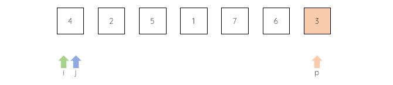

. j向后扫描序列，依次和p比较；如果小，就和i交换位置，同i、j后移，继续扫描、比较、交换

快速排序
#include <stdio.h>
//辅助函数
void dis(int arr[], int len){
int i = 0;
for(; i < len; i++){
printf("%d ", arr[i]);
}
printf("\n");
}
//辅助函数
void swap(int* a, int* b)
{
int temp = *b;
*b = *a;
*a = temp;
}
int pivot(int arr[], int low, int high){
int p = arr[high];
int i = low, j;
// 从low开始，每个都和基准p比较
// 如果小于p，就换到前面，同时位置后移
for(j = low; j < high; j++){
if(arr[j] < p){
swap(&arr[j], &arr[i]);
i++;
}
}
swap(&arr[high], &arr[i]);
return i;
}
// 递归划分
void sort(int arr[], int low, int high){
if(low < high){
int mid = pivot(arr, low ,high);
sort(arr, low, mid - 1);
sort(arr, mid + 1, high);
}
}
// 排序入口
void quickSort(int arr[], int len){
sort(arr, 0, len - 1);
}
//主函数
int main () {
int arr[] = {9,5,2,7,12,4,3,1,11};
int len = 9;
dis(arr, len);
quickSort(arr, len);
dis(arr, len);
return 0;
}